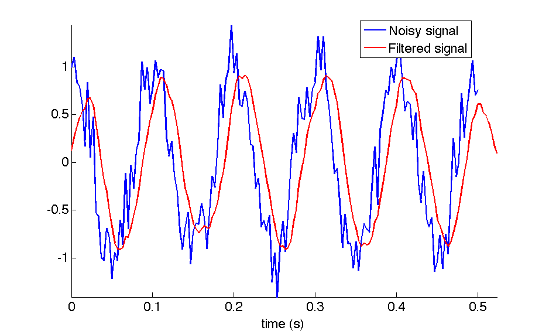

DSP Lab 3: Discrete Time Systems and Convolution¶
Authors: Mateo Aboy, Aaron Scher, and Joel Sprunger Oregon Institute of Technology
Lab Materials
This lab was developed based on coursework for EE 430. It provides hands-on experience with discrete time systems, impulse response, convolution, and digital filtering using MATLAB.
Objectives¶
The objective of this lab is to investigate discrete time systems. We will use the concepts of impulse response and convolution to introduce the concept of digital filtering.
Introduction: Development of the Convolution Sum¶
A discrete time system can be modelled mathematically as a transform, a function, or an operator \(T\), that takes or "processes" an input sequence \(x[n]\) and produces an output sequence \(y[n]\), that is
Systems are divided in two broad classes: linear and nonlinear. Linear systems obey the principle of superposition:
Linear systems can be further divided into two classes: time-invariant and time-variant.
Time invariance means that if the input signal \(x[n]\) produces an output signal \(y[n]\) then any time-shifted signal \(x[n-n_0]\) results in a time shifted output \(y[n-n_0]\). In other words, a time-invariant system's output does not depend explicitly on time.
Linear-time-invariant (LTI) systems are very important in practice because there is a well developed mathematical theory that enables us to analyze, design, and study these systems in great detail. From an anthropocentric perspective, LTI systems are (usually) much "easier" to solve and characterize compared to nonlinear systems. So we'll stick with LTI for now.
Why LTI Systems Are Easy
One thing that makes LTI systems "easy" is that we can completely characterize an LTI system by its impulse response \(h[n]\) (this is proven in class and in the textbook). In other words, if we have an LTI system and we want to know what the system does to a general signal, the only thing we need to do is apply a unit impulse \(\delta[n]\) and record the output (by definition this output is the impulse response \(h[n]\)).
Once we have \(h[n]\), we can use the convolution sum to find the output of the system for an arbitrary input:
The expression above for \(y[n]\) is called the linear-convolution sum and is denoted by
Example: Low Pass Filter¶
In this example we show a practical application of the concept of convolution. In particular, we will see how a system with a very simple impulse response can be used as a filter to smooth noisy signals.
For this example, we will create a sinusoidal signal with a frequency of 10 Hz, sampled at 300 Hz, which is corrupted by zero mean, unit variance Gaussian noise. Next we generate a sequence \(h[n] = \frac{1}{8}(u[n]-u[n-8])\). This is an impulse response which is constant (i.e. it is equal to \(\frac{1}{8}\)) between \(n=0\) and \(n=7\). At all other times (i.e. at all values of \(n\) outside the interval \(n=0\) to \(n=7\)), the impulse response is equal to zero. Using convolution, we filter the noisy input signal \(x[n]\) with the filter characterized by \(h[n]\).
Figure 1 shows the input \(x[n]\) and output \(y[n] = x[n]*h[n]\) of the system discussed above.
Notice that the use of this filter with a very simple impulse response can help to reduce the Gaussian noise. The output of the system is less noisy than the original sequence. This system is called a moving-average filter, because the output is an average, that is
which can be expanded as:
This is the convolution sum of a finite-impulse response filter (FIR) of order 7. The problem in digital filtering design is how we go about choosing the \(h[n]\) coefficients so that we can filter-out the undesired noise present in the input signal. We are usually interested in filtering out some particular frequencies while leaving the others unchanged, therefore we need techniques that allow us to find specific coefficients to remove specific frequencies. This design is done in the frequency domain. We will revisit this topic once we have introduced the concepts of DTFT, DFT, and FFT.
 Figure 1: Example of a discrete system that smooths an input signal and improves the signal-to-noise ratio. The underlying signal is a 10 Hz sinusoid sampled at 300 Hz which is corrupted by Gaussian noise. Notice the output is a smooth delayed version of the input.
Lab Tasks¶
Report Guidelines¶
For the lab report, you will create a PowerPoint presentation (or use a similar presentation program), save it as a PDF, and submit it online according to the instructions given in class. All submitted MATLAB code should be well organized and commented with clear comments for easy readability. All submitted plots should be easy to see and well-labeled.
Independent Work
You are to work independently. This is not a team assignment. Feel free to help your fellow classmates understand principles and concepts, but please do not share your work.
Your presentation will have 24 slides. Please include a slide number in the footer of each slide. To earn full credit your presentation must contain the slides in the order asked for in this lab. If you miss a slide, please leave a blank slide in its place so that you still have exactly 24 slides total.
Slide 1: Title slide with your name, student ID number, date, lab name, class number/title.
Task I: Intracranial Pressure (ICP) Signal Filtering¶
1. Download the file ICPComposite.mat. Load the file into MATLAB. The signal is saved as a variable called icpcomposite. You can check this by typing whos after loading the file into MATLAB. Plot the signal in the time domain, and present your plot in Slide 2 (\(f_s = 125\) Hz).
2. Use a second order moving average filter (\(h[k] = (\frac{1}{3}, \frac{1}{3}, \frac{1}{3})\)) to filter using the convolution sum function (conv in MATLAB). Do the same for a tenth order filter, a filter of order 20, and a filter of order 200. Comment on how increasing the order of the filter changes the system. Present the four plots of the filtered waveform (the plots correspond to filter orders 2, 10, 20, and 200) and discussion in Slides 3-7.
3. MATLAB has two functions that can be used to implement filters by providing filter coefficients, one of them is called filter and the other filtfilt. Using the MATLAB help, repeat the first experiment (for a filter order of 20 only) using both functions, and present your two plots in Slides 8 and 9. Comment on the differences. Is a filter implemented using filtfilt a causal system? Present your answer to this question and comments in Slide 10.
4. Use an FIR filter to eliminate frequency components higher than the fundamental component. Try to filter the ICP signal in such a way that the filtered signal will be as sinusoidal as possible. Present a plot of your filtered signal in Slide 11. For this plot, please program MATLAB to display your name as the title of the plot (e.g. title('Jane Doe')). Present the MATLAB code you used to generate this plot in Slides 12-13. Please be sure to clearly structure and comment your code so it is easy to read and understand.
5. Use the MATLAB detrend command (or devise your own method) to eliminate the ICP trend (DC component). Present a plot of the signal with the DC component eliminated in Slide 14.
Task II: Audio Signal Fun¶
1. Download the file test_audio.mat. This is an audio recording of me saying "testing, testing, one, two, three". I recorded this by speaking into my laptop's built in microphone and using MATLAB's audiorecorder function. Once the file is loaded into MATLAB, the audio signal is saved as variable y. You can check this by typing whos after loading the file into MATLAB. The sample rate of this recording is \(f_s = 44100\) Hz. Play the audio signal using the command soundsc(y,44100). This command sends the data to your computer speakers at a sample rate of 44100 Hz, and automatically plays the signal as loudly as possible without clipping.
Volume Warning
Before playing the signal, turn down the volume of your speakers a bit (especially if you are playing this through headphones).
2. Play the recording at a lower sampling rate of 44100/2 = 22050 Hz using the command soundsc(y,22050). In Slide 15 describe, qualitatively, how lowering the sample rate affects the audio. How does lowering the sampling rate affect the signal in the frequency domain?
3. Suppose your DAC (sound card) is designed to work at 44100/2 = 22050 Hz. How do we faithfully reproduce the audio in this case? The answer is that we need to resample the signal. In this case, because our desired sampling frequency is exactly half the original sampling frequency, we can decimate the signal by 2. Read the MATLAB help document on the decimate function. Now decimate the signal by a factor of 2 via the command: g = decimate(y,2) and play the decimated signal with soundsc(g,22050). Does the decimated signal sound the same as the original? What is the size in bits and bytes of both the original and decimated signals? Hint: Use the whos command. Present your results in Slide 16.
4. Try decimating the signal by a larger factor (say, a factor of 5). How "far can you go" with decimating and still be able to easily hear/understand the audio message? Present your maximum decimation factor in Slide 17. Decimation is a simple form of data compression, i.e. you can encode the same message using fewer bits. Quantify the memory savings obtained by decimating with your maximum decimation factor in Slide 17.
5. Look up the downsample function in MATLAB. Briefly explain the difference between downsample and decimate in Slide 18. When would you use downsample over decimate (and vice versa)? What MATLAB command would you use to decimate the original signal y by the rational factor 3/7 (i.e. not an integer)? Present the answers to these questions in Slide 18.
📥 Download: very_noisy_signal.mat
6. Download the file very_noisy_signal.mat. This is an audio recording of me reciting a secret message to you. The message is about 12 seconds long and the sample rate is again 44100 Hz. Unfortunately, the message is severely corrupted by high-frequency noise. To me, the noise sounds like a terrible hiss, so be sure to turn down your speakers before playing the message. The noisy audio signal is saved as variable z. Play the message using the MATLAB command soundsc(z,44100). Describe what you hear in Slide 19. Can you hear the secret message? My guess is not. To hear the message you are going to need to filter out the high frequency noise.
7. Low-pass filter the noisy signal using a moving average filter with different filter orders. If you can hear the secret message using the moving average filter, then write out the secret message in Slide 20, and take note of the filter order that you used. If you still can't hear the message (even with a high filter order), then take note of this on Slide 21.
8. The moving average filter is not an optimal low-pass filter. Let's create a better filter in MATLAB using the fir1 command. For example, to design a 100 order FIR low pass filter with a cut-off frequency of 0.1, type the command b = fir1(100,.1). Note that the cut-off frequency you enter (0.1 in this case) is assumed by MATLAB to be normalized by \(f_s/2\). Therefore, the actual (unnormalized) cut-off frequency for this filter is \(0.1 \times f_s/2 = 0.1 \times 44100/2 = 2205\) Hz. This is a pretty good cut-off frequency for this example, since it will pass the audio spectrum below 2205 Hz (which contains the majority of frequencies for typical adult male human speech), while attenuating the high-frequency noise.
The result of this command (b = fir1(100,.1)) is an array b that contains the 101 filter coefficients that describe the low pass FIR filter. Next, you can filter the signal z with the conv command in MATLAB: conv(z,b). With this method, filter the noisy signal to expose the secret message. Write the message out verbatim on Slide 22. Include your MATLAB code for filtering the signal in Slides 23 and 24.
References¶
- J. Sprunger and M. Aboy, Computer Explorations in DSP Laboratory 3 - Discrete Time Systems and Convolution, prepared for EE 430, Oregon Institute of Technology, 2013.
Lab created January 2016 | Updated for modern context February 2026